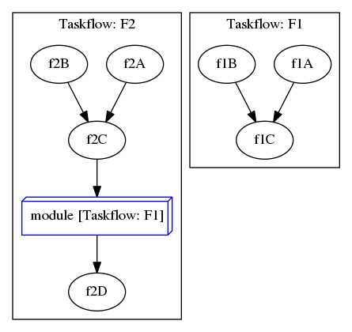
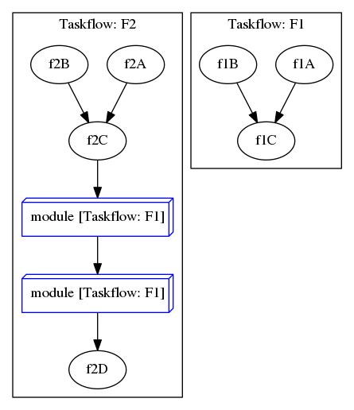
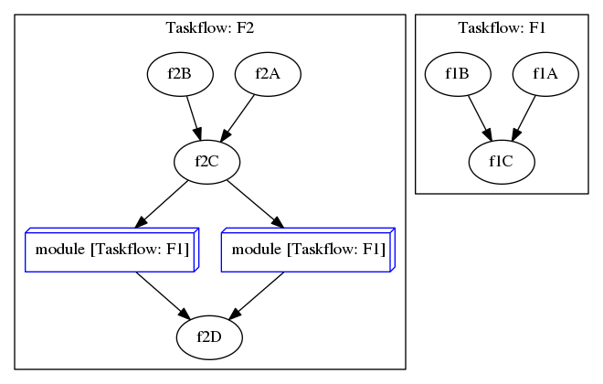

Composition is a key to improve the programmability of a complex workflow. This chapter describes how to create a large parallel graph through composition of modular and reusable blocks that are easier to optimize.
Compose a Taskflow
A powerful feature of tf::Taskflow is its composable interface. You can break down a large parallel workload into smaller pieces each designed to run a specific task dependency graph. This largely facilitates the modularity of writing a parallel task program.
1:
7:
13:
14:
15:
16:
23:
28:
31:
35:
Task emplace(C &&callable)
creates a static task
Definition flow_builder.hpp:742
Task composed_of(T &object)
creates a module task for the target object
Definition flow_builder.hpp:812
class to create a task handle over a node in a taskflow graph
Definition task.hpp:187
const std::string & name() const
queries the name of the task
Definition task.hpp:499
Task & precede(Ts &&... tasks)
adds precedence links from this to other tasks
Definition task.hpp:420
class to create a taskflow object
Definition core/taskflow.hpp:73
void dump(std::ostream &ostream) const
dumps the taskflow to a DOT format through a std::ostream target
Definition core/taskflow.hpp:363
void name(const std::string &)
assigns a name to the taskflow
Definition core/taskflow.hpp:333

Debrief:
- Lines 1-12 create a taskflow of three tasks f1A, f1B, and f1C with f1A and f1B preceding f1C
- Lines 17-30 create a taskflow of four tasks f2A, f2B, f2C, and f2D
- Line 32 creates a module task from taskflow f1 through the method Taskflow::composed_of
- Line 33 enforces task f2C to run before the module task
- Line 34 enforces the module task to run before task f2D
Create a Module Task
The task created from Taskflow::composed_of is a module task that runs on a pre-defined taskflow. A module task does not own the taskflow but maintains a soft mapping to the taskflow. You can create multiple module tasks from the same taskflow but only one module task can run at one time. For example, the following composition is valid. Even though the two module tasks module1 and module2 refer to the same taskflow F1, the dependency link prevents F1 from multiple executions at the same time.

However, the following composition is invalid. Both module tasks refer to the same taskflow. They can not run at the same time because they are associated with the same graph.

Create a Custom Composable Graph
Taskflow allows you to create a custom graph object that can participate in the scheduling using composition. To become a module task, your class T must define a method T::graph() that returns a reference to a tf::Graph object. The following example defines a custom graph object that can be assembled in a taskflow throw composition:
1: struct CustomGraph {
3: CustomGraph() {
5:
tf::Task task = builder.emplace([](){
7: });
8: }
9:
10: Graph& graph() { return graph; }
11: };
12:
13: CustomGraph obj;
class to build a task dependency graph
Definition flow_builder.hpp:21
class to create a graph object
Definition graph.hpp:56
Task & composed_of(T &object)
creates a module task from a taskflow
Definition task.hpp:436
Debrief:
- Lines 1-11 define a custom graph interface to participate in taskflow composition
- Line 2 defines the graph object using tf::Graph
- Lines 3-8 defines the constructor that constructs the task graph using tf::FlowBuilder
- Line 10 defines the required method for taskflow composition
- Lines 13-14 creates a module task for the declared graph object in the taskflow
The composition method tf::Taskflow::composed_of requires the target to define the graph() method that returns a reference to a tf::Graph object defined by the target. At runtime, the executor will run dependent tasks in that graph using the same work-stealing scheduling algorithm as other taskflows. Taskflow leverages this powerful feature to design high-level algorithms, such as tf::Pipeline.
- Note
- While Taskflow gives you the flexibility to create a composable graph object, you should consider using tf::Graph as an opaque data structure just to interact with the library. Additionally, as other module tasks, Taskflow does not own the lifetime of a custom composable graph object but keeps a soft mapping to it. You should keep the graph object alive during its execution.